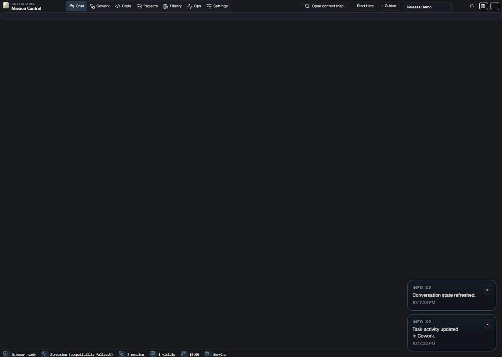
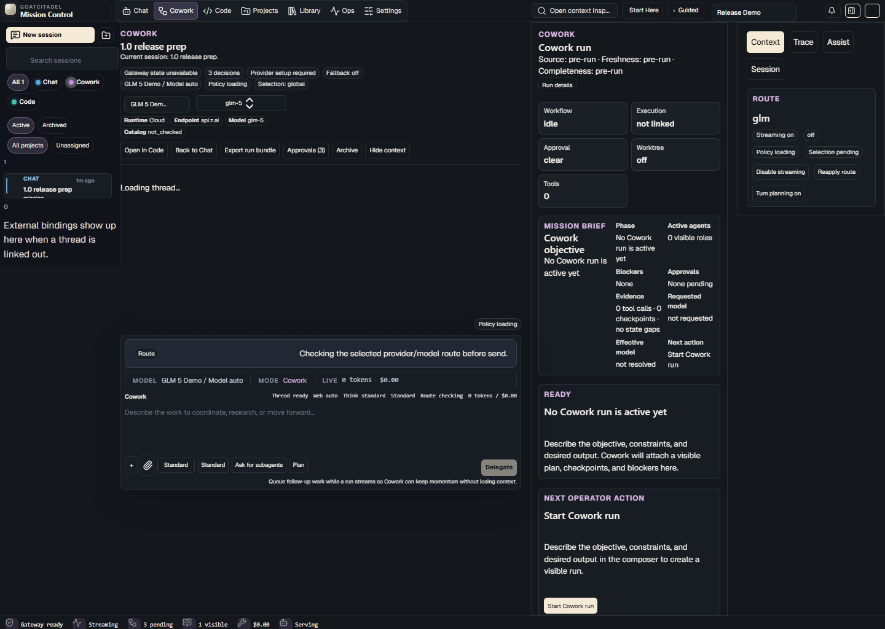
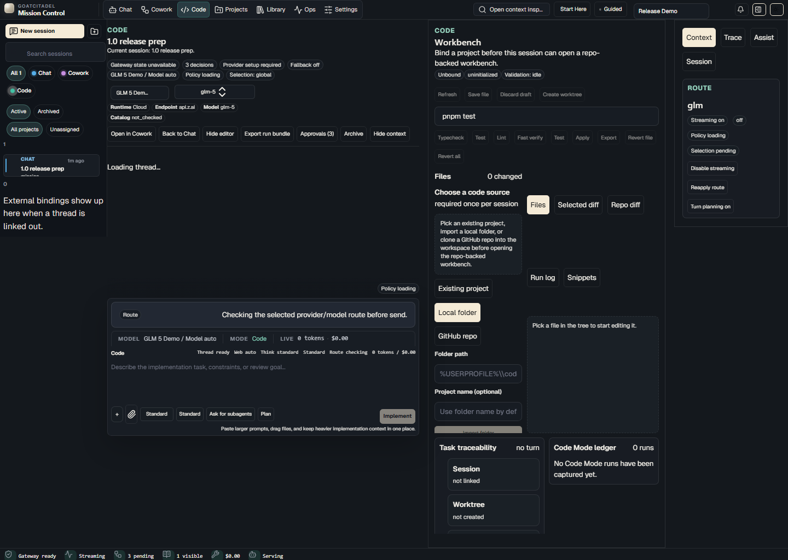
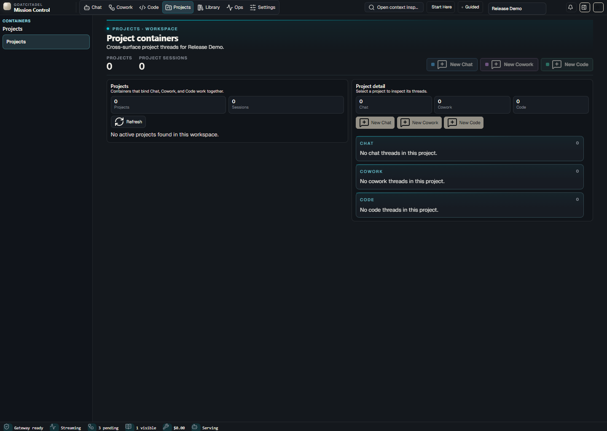
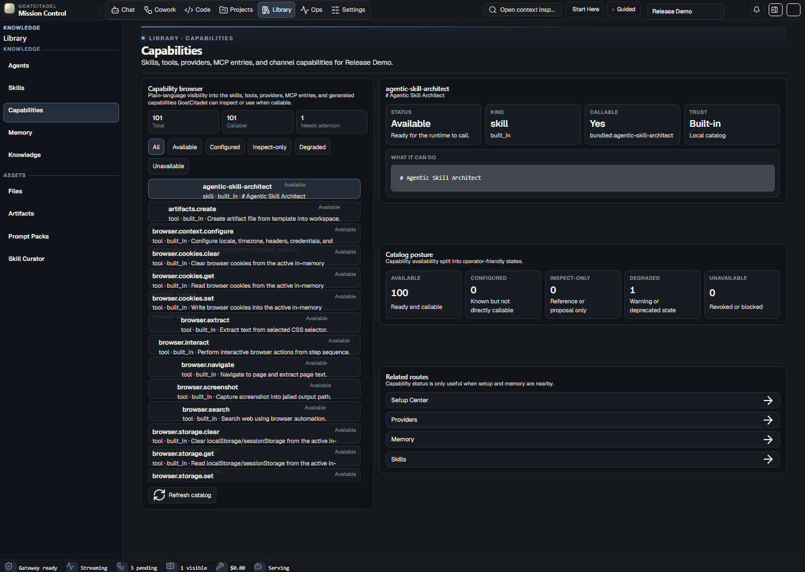
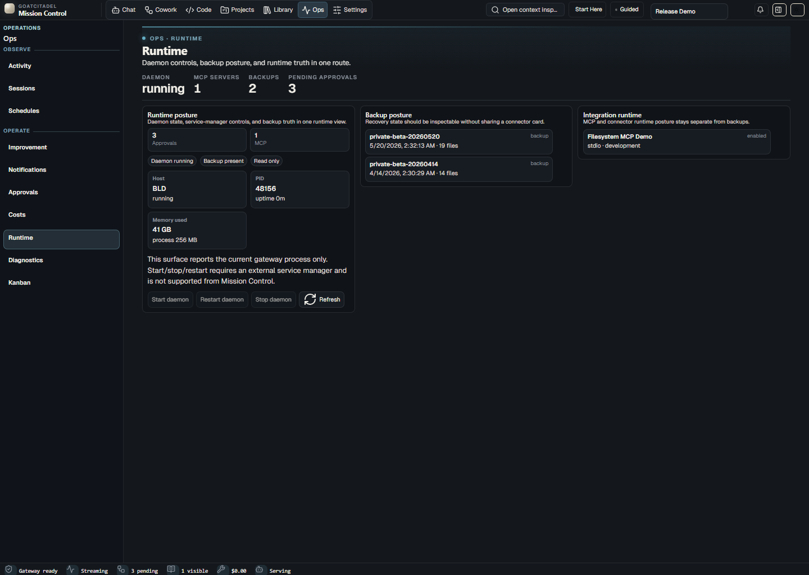
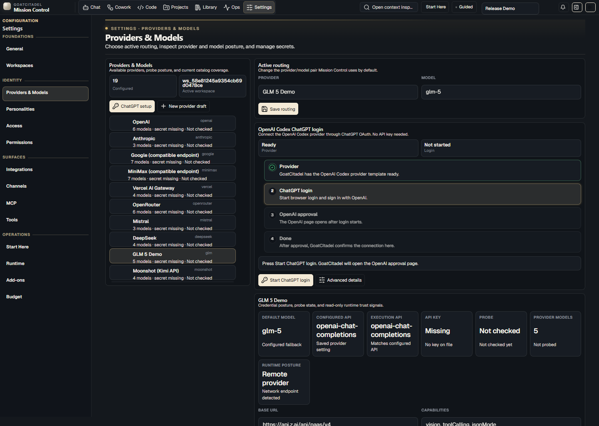

GoatCitadel Mission Control Next Screenshots
Regenerated from a sanitized 1.0 demo runtime. Folder: docs/screenshots/mission-control-next
Chat
Fast conversation with runtime context, citations, attachments, and tool visibility close at hand.

Cowork
Supervised agentic work with approvals, checkpoints, delegation lineage, and synthesis status.

Code
Focused implementation, review, debugging, and governed Code Mode execution.

Projects
Workspace and project containers that group Chat, Cowork, and Code threads.

Library / Capabilities
Inspectable capability, skill, tool, provider, MCP, and channel evidence.

Ops / Runtime
Operational health, runtime posture, diagnostics, and source-status truth.

Settings / Providers
Provider and model setup with key-on-file truth and safe local defaults.
